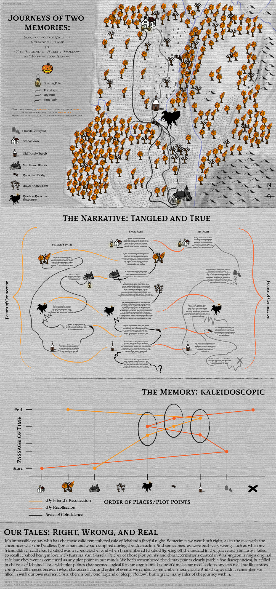
High Resolution Version" data-description="This map visualizes the narrative of the Legend of Sleepy Hollow as remembered through me and a friend, with the real narrative pathway overlaid. It utilizes both real-world data (buildings, river, roads, and elevation) along with hand-drawn illustrations and pathing to create a unique narrative map of the spatiality of the Legend of Sleepy Hollow.The bare-data map was made in QGIS with illustrations, narratives, and graph made in Adobe Illustrator. The bare-data map in QGIS only featured the hillshade, river, and roads, which was put together and exported into Illustrator, where the real-world data was stylized with a canvas texture and buildings were manually added by tracing over the building footprints of Sleepy Hollow. Illustrations, Ichabod's pathing, the narratives, and the graph were all hand-drawn in Illustrator (RIP to my fingers and eyes doing this on a trackpad). Find more information about it by clicking Learn More below!" data-footer='Learn More'>
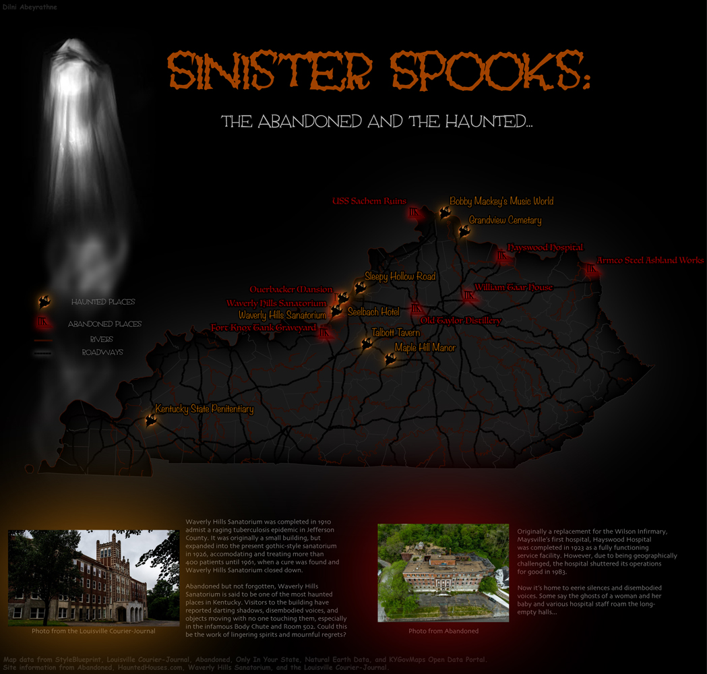
High Resolution Version" data-description="Ever wondered where all the most famous haunted and abandoned spots are in Kentucky? This map shows a selection of some of the most popular alleged haunted and abandoned spots in Kentucky, sourced from various websites and news articles referencing hauntings. The entire map is stylized thematically to represent a more spooky atmosphere.The map was made entirely in QGIS, including all the stylings and design elements! The haunted and abaondoned data was first compiled into a CSV and added into a basemap of Kentucky (state border, counties, major roads, and rivers). The fun part is that the shaded outlines on the edge of Kentucky was added through a second, starburst-filled Kentucky border layer. Afterwards, all other stylings and text were added in QGIS and in Print Composer. Find more information about it by clicking Learn More below!" data-footer='Learn More'>
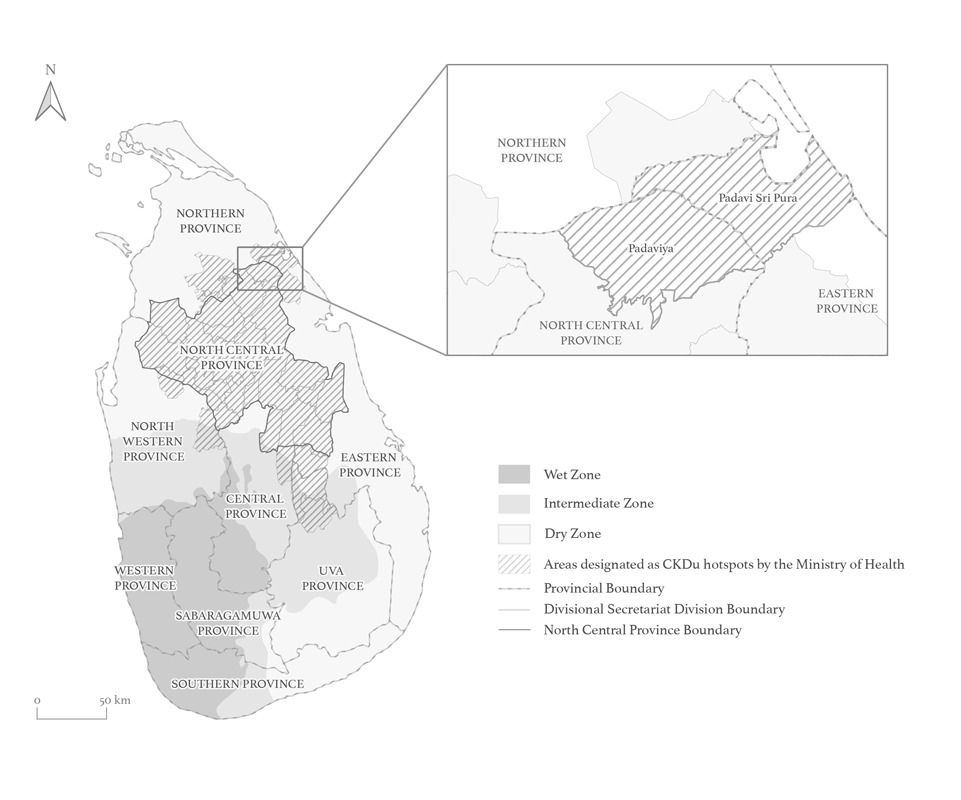
High Resolution Version" data-description="A commissioned map, this re-design focuses on visualizing hotspots of the chronic kidney disease of unknown etiology (CKDu) in Sri Lanka alongisde patterns of agroecological zones. It is a more minimalistic map utlizing the challenge of monochromatic design, which was certainly fun but challenging to implement! Additionally, this map was published in Transactions of the Institute of British Geographers journal.This map was made largely in QGIS with some final design elements added in Illustrator. Since the data was already available, I re-designed the original map into this more minimalistic version that puts more focus on the CKDu data." data-footer=''>
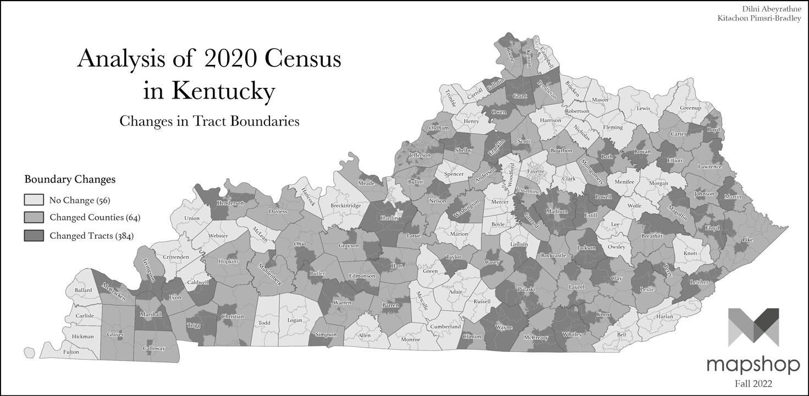
High Resolution Version" data-description="Census tract data is fun to examine but very challenging to map out, as I learned! This map was made as a comparison of the changes in census tract boundaries in Kentucky from 2010 to 2020. Using a monochromatic color scheme, it highlights tracts that have no change, confirmed changes, and the counties that have undergone changes.This map was made mostly in QGIS with the design cleaned up and finalized in Illustrator. The data itself was also arranged manually alongside a colleague, wherein we had to manually compare all tracts and counties to determine which ones had changes between 2010 and 2020. It was very time-consuming but ultimately led to a very informative map!" data-footer=''>
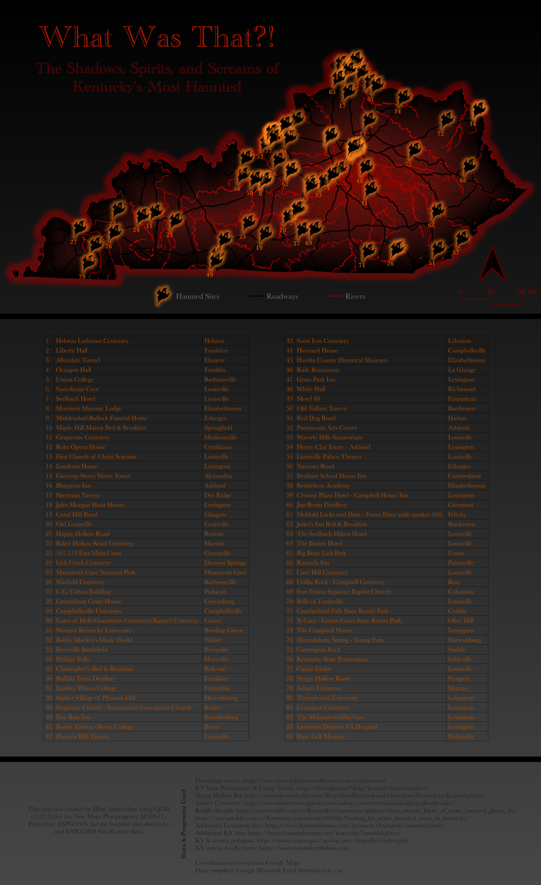
High Resolution Version" data-description="This map is another expansion of the spooky places map, but this time focusing only on a comprehensive mapping of all alleged haunted locations in Kentucky (putting aside abandoned places). As with the previous spooky places map, I gave myself the challenge of designing and styling this entirely on QGIS.While data for the map was manually compiled in a CSV (sourced from various websites and news articles), the map design leaned more into the spooky theme by incorporating an updated starburst fill pattern on the border and adding more sharp emphasis to rivers and roads. The comprehensive legend was added at the bottom and to accomodate it, the map was redesigned to fit a vertical orientation, styled after an inforgraphic format." data-footer=''>
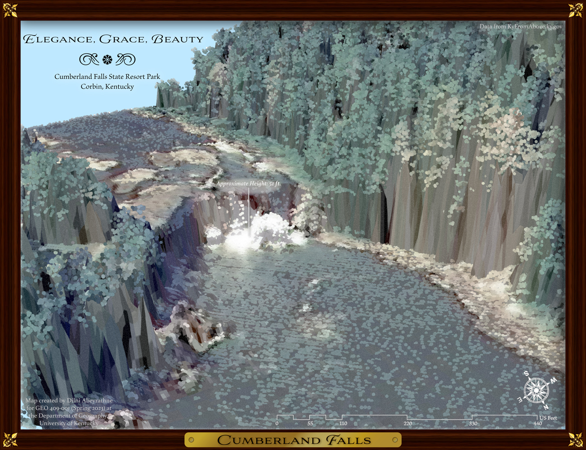
High Resolution Version" data-description="Welcome to Cumberland Falls! This map uses LiDAR data to visualize the topography of Cumberland Falls in Corbin, Kentucky. With a natural color scheme, one could almost think this is a photograph of the falls from afar (owing to the impressing high-resolution satellite imagery that was used as the basemap). The map design itself is fashioned after a older-styel photograph frame, complete with embossed borders and a gold-styled plaque at the bottom.This map was made in ArcGIS Pro, utlizing an elevation model with LiDAR data superimposed on top to create a natural earth effect. Final stylings and map design were also added in ArcGIS Pro, which was a very fun process! I also made an accompanying 3D render of the falls using ArcGIS Pro's animation capabilities, which you can find here: Cumberland Falls, Kentucky (LiDAR Visualization)." data-footer=''>
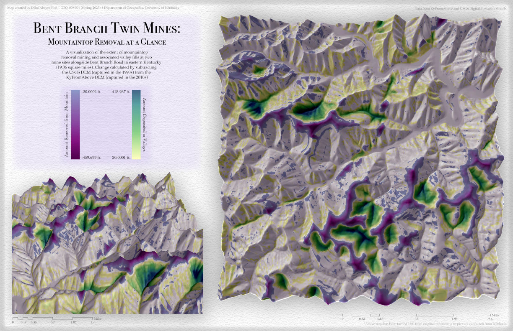
High Resolution Version" data-description="This map shows the aftereffects of mountaintop removal and velley fills, represented by a violet-magenta and green-yellow gradient, respectively. This is more of a data-driven map, but I also wanted to give it more of an artistic flair by carefully matching color schemes and adding some stylistic effects to make the data pop.This map and its design were made entirely in ArcGIS Pro through a calculation of change using two elevation models (one that has the original mountains and one that has the mountains after mountaintop removal and valley fills). I also made an accompanying 3D render of the area using ArcGIS Pro's animation capabilities, which you can find here: Bent Branch Twins." data-footer=''>
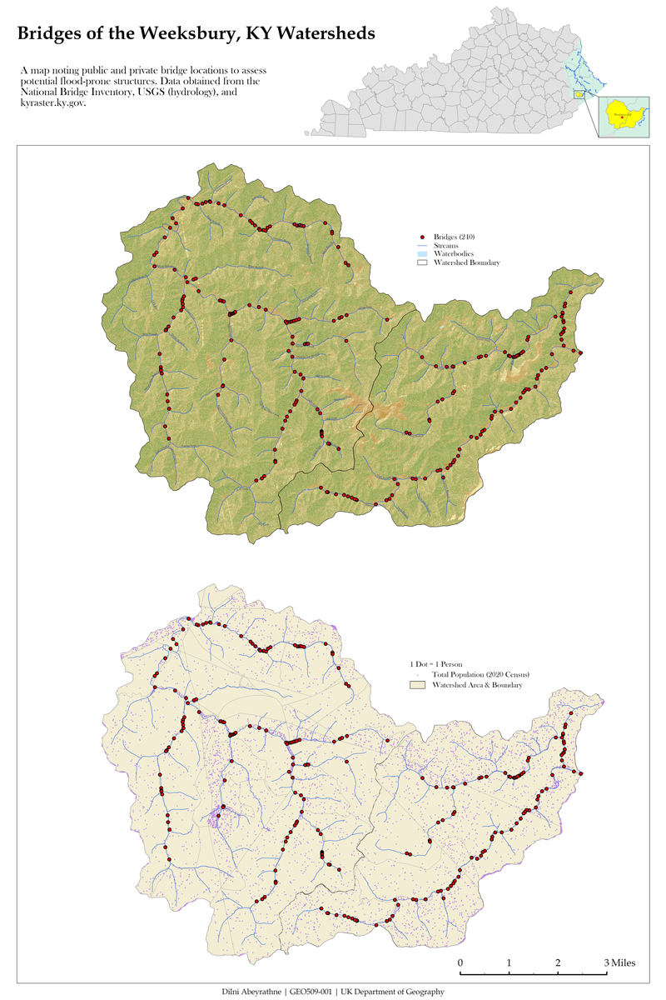
High Resolution Version" data-description="Ever wondered about how many bridges there are in Eastern Kentucky going over the multitude of waterways? This map visualizes all the public and private bridges that were observable via satellite imagery in the Weeksbury, KY watershed in 2022. It is stylized in a more minimalistic fashion, as I wanted the data to have top priority and emphasis.The data for this map was compiled manually by going along each waterway in the satellite image and places markers down ob observed bridges alongside already noted bridges in the National Bridge Inventory. Population data was added in as well for context and for assessing bridges that were flood-prone in the area." data-footer=''>
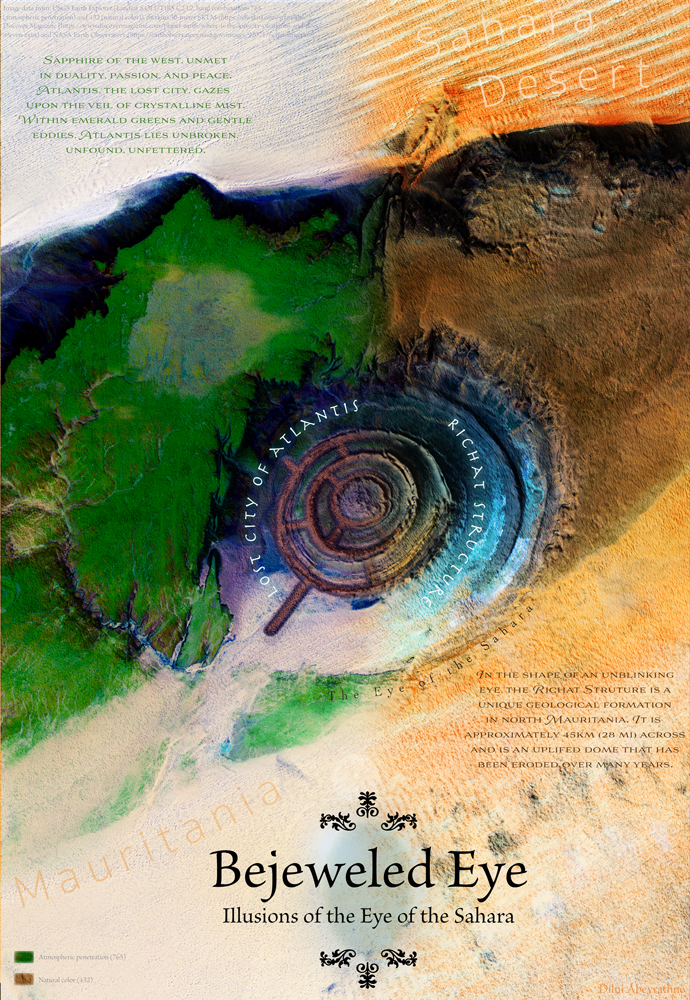
High Resolution Version" data-description="This was a very fun map to make! I had the idea of representing a sort of conspiracy regarding the location of the city of Atlantis in the Eye of the Sahara against its natural visage and thus, this map was born. It is a more artistic and experimental map utilizing one elevation model and two merged satellite band combinations (Atmospheric Penetration and Natural Color) to create a unique visual effect that also fit the conspiracy/not conspiracy theme.This map was initialized in QGIS with the elevation model and satellite imagery and then transported into Blender to generate a smoother hillshade effect. Lastly, the map was transferred to Illustrator to blend the satellite imagery with the elevation model and to add the final design elements. It came out looking more like a movie poster, but I enjoyed engaging in a more experimental artistic and technical process!" data-footer=''>
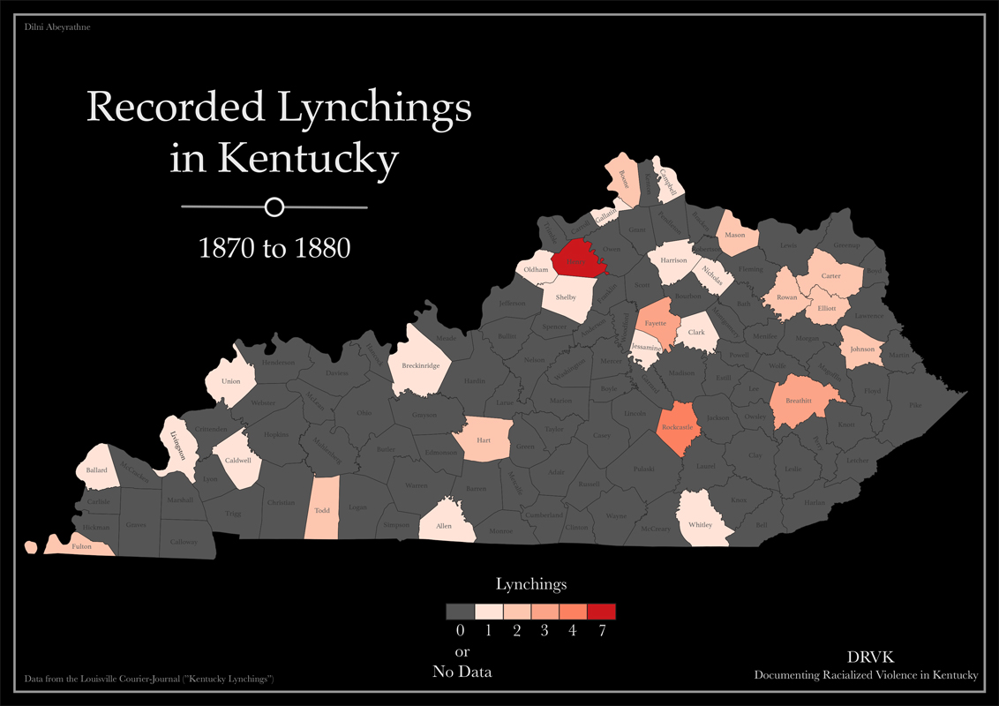
High Resolution Version (animated)" data-description="This map is one of the dozens I made for the Documenting Racial Violence in Kentucky (DRVK) project, specifically depicting instances of recorded lynchings in Kentucky from 1870 to 1880. It is a more data-driven map and, regarding the subject matter, more minimalistic in its design.This map was made in QGIS with data that was manually compiled by first my colleagues, then myself to make it GIS-ready. Design for the map was finalized in Illustrator. I also made an animated version of this map for better data visualization through each decade. My maps for this project can be found here: DRVK Maps." data-footer=''>
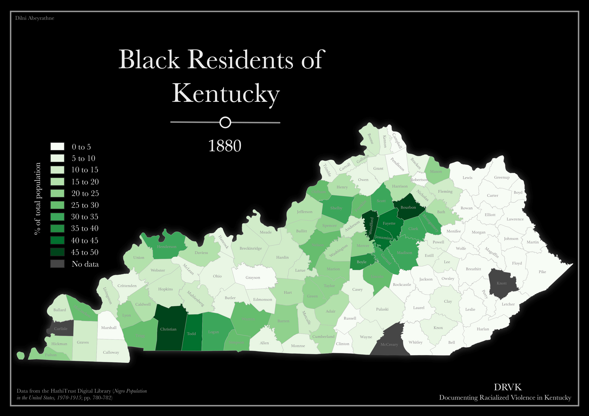
High Resolution Version (animated)" data-description="This map is also one of the many I made for the Documenting Racial Violence in Kentucky (DRVK) project, specifically depicting the percentage of Black residents in Kentucky from 1880 to 2020. Being more data-driven, this map has a more simplistic design that seeks to emphasize the dataset.This map was made primarily in QGIS with data that was manually compiled by first my colleagues, then myself to make it GIS-ready. Design for the map was finalized in Illustrator. This and the other maps I made for the DRVK project can be found here: DRVK Maps." data-footer=''>
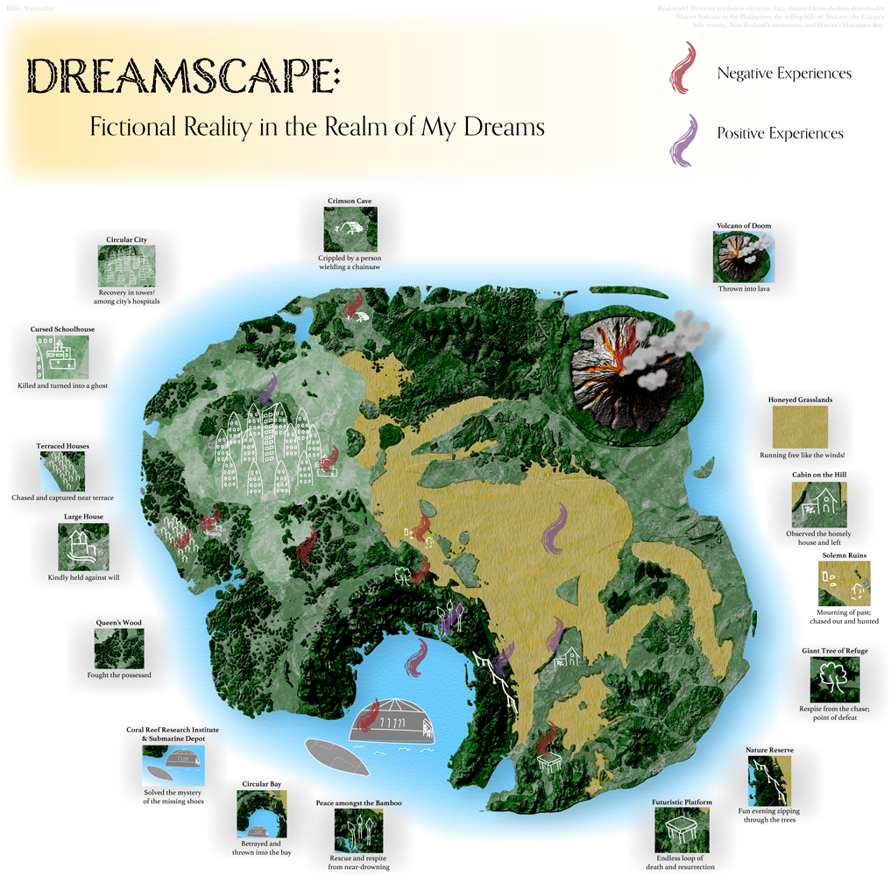
High Resolution Version" data-description="What a fun map to make! I have always had very vivid dreams with detailed landscapes, so my goal for this map was to experiment with how to represent a fictional dream landscape with real-world data. More challenging was my intention of combining all my dreamscapes into one large landmass and finding real-world data to create a 3D-looking visualization. As my maps go, this was one of the more challenging projects.To create the terrain basemap, I used several different rasters of elevation data that I merged together using Photoshop. Afterwards, custom textures and colors were painted on in Illustrator to create the finalized basemap, with stylized white illustrations representing particular dream places added on top. The collation of rasters and painstakingly painting their respective textures took a very long time, but was ultimately quite rewarding to see come together!" data-footer=''>
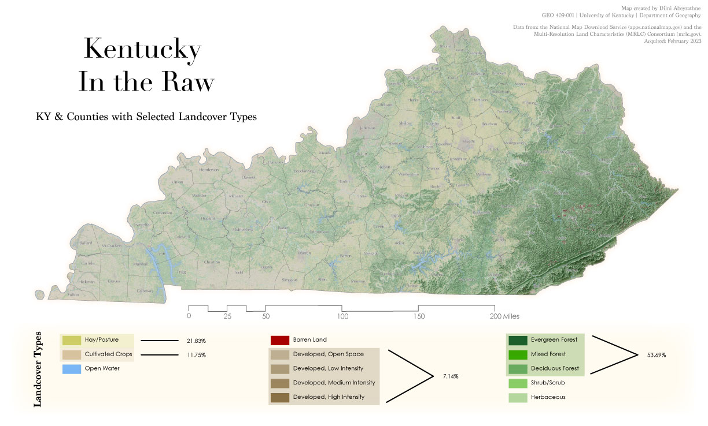
High Resolution Version" data-description="Kentucky has a very interesting spread of landcover types, which is very interesting to explore! This map, done as a practice to get familiar with ArcGIS Pro's landcover visualization and classification capabilities, uses a soft color palette to create a inconspicuous basemap that also shows different forms of landcover clearly.This map was made entirely in ArcGIS Pro, including both landcover classification and visualization as well as the overall map design." data-footer=''>
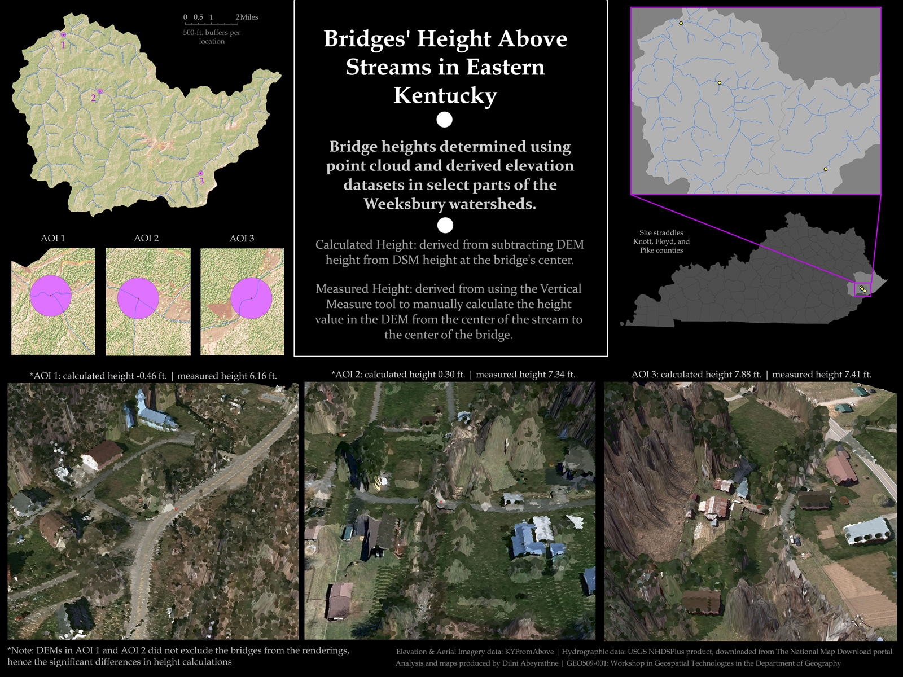
High Resolution Version" data-description="A continuation of the Weeksbury Watershed mapping project, this map is a snapshot of three specific bridges in the Weeksbury Watershed using LiDAR visualizations. In addition, the map also features calculations of bridge height in two variations: (1) calculated height acquired from subtracting DEMs and (2) measured height using ArcGIS Pro's Vertical Measurement tool.This map as well as its data calculations were made entirely in ArcGIS Pro. Overall map styling and design was also done in this program." data-footer=''>
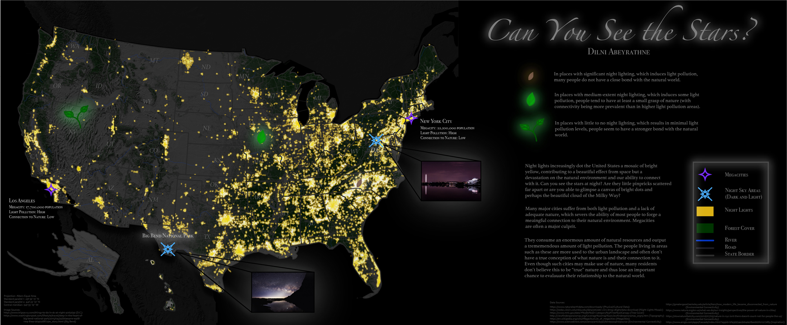
High Resolution Version" data-description="One of the earliest maps I made, this one is a visualization of light pollution across the U.S. as related to percieved connections to nature. The light pollution data was by far the hardest part to find and work with, as no point-dataset existed at the time of its creation. As a result, I had to manually crop and style a dataset that had light pollution data in raster format. The rest of the map design (the dark basemap) was heavily inspired from the dark basemaps used in Firefly Cartography, which I ssought to emulate in my own way.The data for this map was compiled in QGIS, as were the initial basemap elements. The final stylings, including both the data cleaning and adding the dark theme to the basemap, were done in Illustrator. Overall, this was a frustrating experience but very helpful in learning how to manage stylistic limitations in my datasets!" data-footer=''>
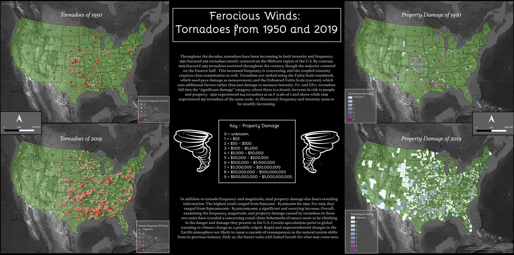
High Resolution Version" data-description="The spatiality of extreme weather events is always interesting to explore, and for this map, I wanted to do that for tornados in the U.S. As such, I mapped all recorded tornados in the U.S. during 1950 and 2019 alongside the overall property damage caused by the incidents.The data for this map was compiled in QGIS and the final styling was done in Illustrator. Given the large amount of data points and the usage of four fully realized maps, this map grew to be a doozy to wrestle with in terms of design and data management!" data-footer=''>
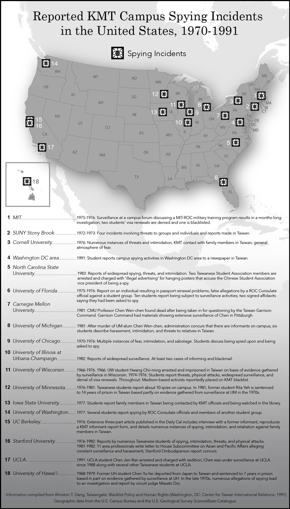
High Resolution Version" data-description="This is the third map commission I engaged in and it was very interesting to create the design for this visualization! The map itself depicts instances of surveillance in U.S. universities during the period 1970-1991. With the data already provided, my work was to style and design the map in a way that effectively illustrated the data and gave needed context.Thus, this map, initialized first in QGIS then transferred to Illustrator, took on a more inforgraphic form. It took a while to come to this format, but it ended up fitting the data and its styling the best. The map is published in the book Island X: Taiwanese Student Migrants, Campus Spies, and Cold War Activism by Dr. Wendy Cheng." data-footer=''>
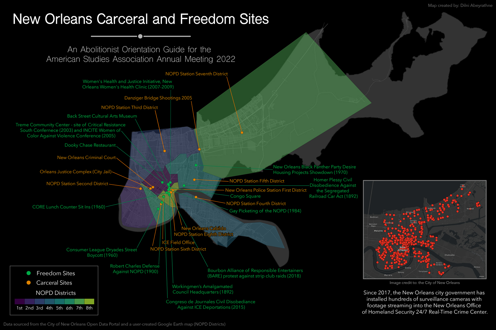
High Resolution Version" data-description="This second map commission I created, which depicts carceral and freedom sites in New Orleans alonslide a smaller map of noted surveillance cameras in the city. This map made much more use of color and bright emphasis atop a very muted, monochromatic basemap. Given the detailed data points and needed context, one of the challenges for this map was figuring out how to fit all that information in the map in a stylistic, non-overwhelming way.As usual, the map was first compiled in QGIS then transferred to Illustrator for the final stylings. While it took some experimentation to get the colors and overall color schemes to a place that I liked, it was a very satisfying project to complete! This map was used as a presentation visual for the 2023 American Studies Association conference." data-footer=''>
{kind=link}
WEB MAP
INTERACTIVE MAP
ABOUT ME
Dilni Abeyrathne
I am a rising cartographer, geographer, and artist seeking to meld mapmaking with explorations of human thought processes, sustainability, environmentalism, and society. I am also a graduate of the University of Kentucky with three Bachelor's degrees in Environmental & Sustainability Studies, Geography (with a minor in Mapping & GIS), and International Studies. During my years of undergraduate study, I engaged with several academic projects and commissions that utilized cartography, including making maps for the Documenting Racial Violence in Kentucky (DRVK) project, Mapshop, the Kentucky Geological Survey, and private commissions for three professors.
My cartography seeks to meld art, metaphor, and mapmaking into a dive into unique human understandings of the world and the environment. I love mapping both the realistic and the fictional, and have experimented at mixing the two to create unique spatial realms. Aside from mapmaking, I'm an avid reader, writer, artist, and enjoy frolicking around in nature as much as possible, preferably among giant rocks and shifting forests.